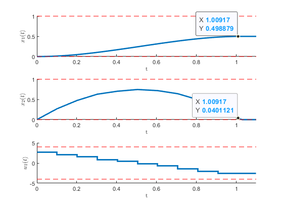
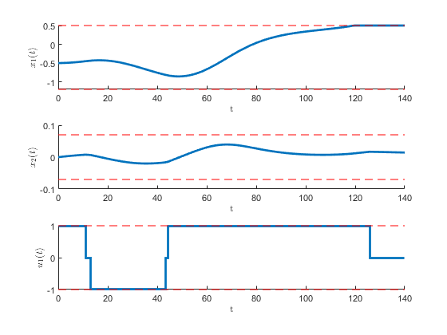
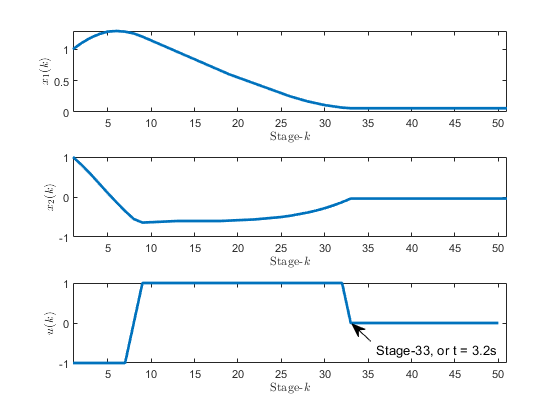

Figure 1:The optimal state and input variable for the two-oven problem
Figure 2:Backward reachability plot of the two-oven problem that shows all possible state evolution to reach a certain terminal condition.

Figure 3:The optimal states and input for the mass-damper optimal control problem.
(Jonsson, 2010)
Figure 4:The optimization results for the optimal storage strategy problem.
Figure 5:Backward reachability plot of a targeted terminal state.
(Sundstrom & Guzzella, 2009)
Figure 6:The optimal input and the resulting state values for the Lotka-Volterra fishery problem generated by the dynamic programming.
Figure 7:The reachable and unreachable states for the Lotka-Volterra fishery problem in order to reach a given terminal state.
Drawing 1:Schematic and parameters of a Dubins' car
Figure 8:Optimal state evolution of the Dubin's car which is located at and moving to terminal as .
Figure 9: Optimal path for the car, which is initially located at and moving to terminal as .
Drawing 2:A kinematic cat that can only move one grit at a time
Figure 10:State evolution and control input sequence for a given initial position to a targeted terminal position
Figure 11:An example of an optimal path found by the dynamic programming algorithm
(Sutton & Barto, 2018)
Figure 12:The Sutton's mountain car problem

Figure 13:State evolution and control input sequence of the mountain car
Figure 14:Animation of the car's optimal movement
Figure 15:Reachability plot of the Sutton's mountain car's problem
(Elbert et al., 2013)
Drawing 3:Illustration of the two tank problem
Drawing 4:Hanging piecewise linear spring due to the gravity
Drawing 5:Analogous planar kinematic car to model the piecewise linear springs


Bertsekas, D. P. (2000). Dynamic Programming and Optimal Control (2nd ed.). Athena Scientific.
Elbert, P., Ebbesen, S., & Guzzella, L. (2013). Implementation of dynamic programming for n-dimensional optimal control problems with final state constraints. IEEE Transactions on Control Systems Technology, 21(3), 924931.
Jonsson, U. (2010). Optimal Control. Optimization and Systems Theory, KTH.
Miretti, F., Misul, D., & Spessa, E. (2021). DynaProg: Deterministic Dynamic Programming solver for finite horizon multi-stage decision problems. SoftwareX, 14, 100690.
Sundstrom, O., & Guzzella, L. (2009). A Generic Dynamic Programming Matlab Function. 18th IEEE International Conference on Control Applications, 7, 16251630.
Sutton, R. S., & Barto, A. G. (2018). Reinforcement Learning: An Introduction (2nd ed.). The MIT Press.